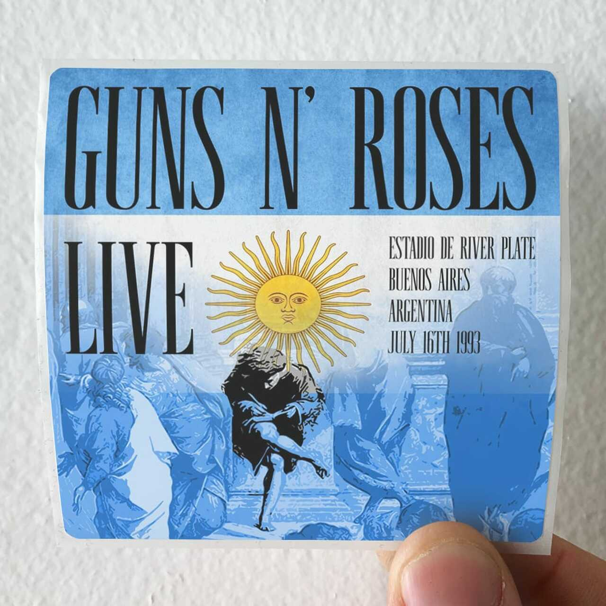
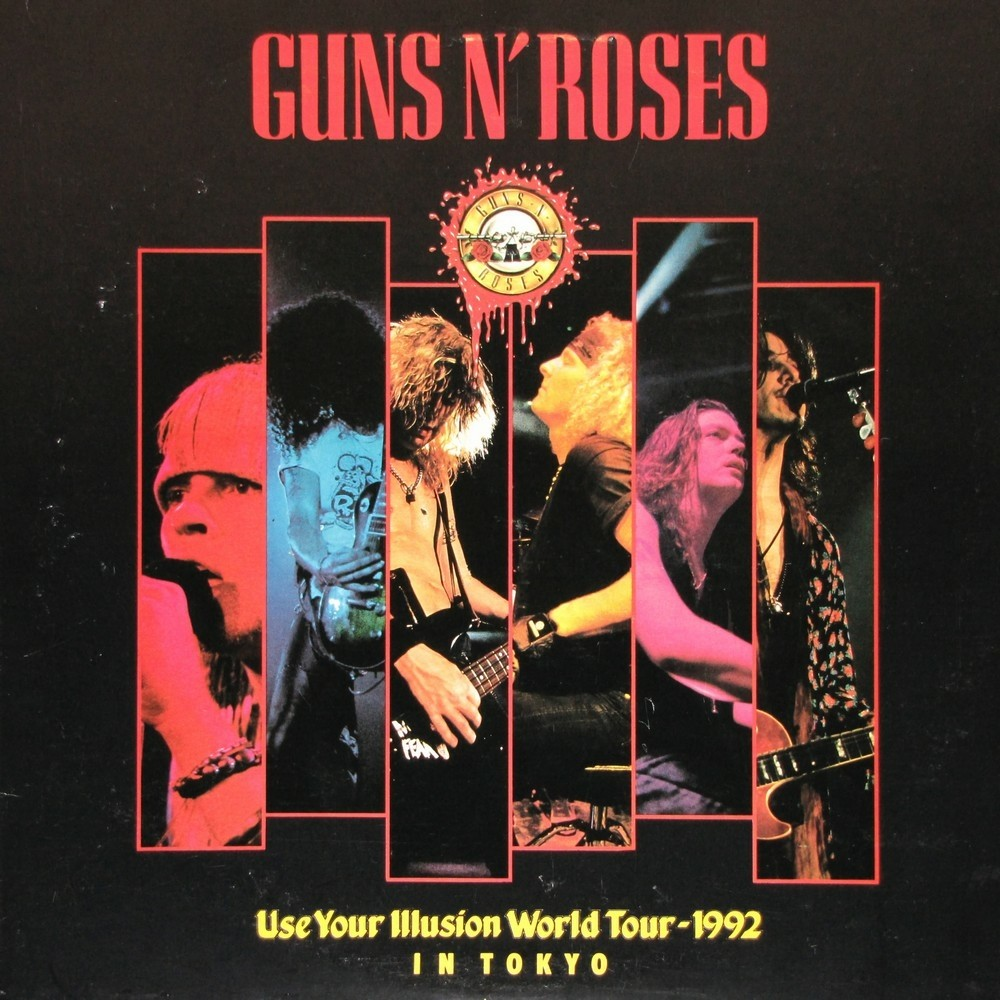

Use Your Illusion World Tour
El "Use Your Illusion World Tour" fue una gira para promocionar los álbumes Use Your Illusion I y Use Your Illusion II, aunque debido a la escala de la gira, el término " gira promocional" es tal vez una trivialización. La gira comenzó el 24 de mayo de 1991, aproximadamente cuando el álbum Use Your Illusion iba a ser lanzado, y terminó más de dos años más tarde de lo que estaba planeado. La fecha de lanzamiento del álbum, o álbumes, ya que en realidad hay dos de ellos, fue pospuesto hasta septiembre, pero la gira se inició como estaba previsto. La visita marcó un punto culminante en la popularidad de los Guns N' Roses, con un total de más de 7 millones de fanes en los 192 conciertos y acompañado por las altas ventas de los dos álbumes.
| Use Your Illusion World Tour | |
|---|---|
| Gira de Guns N' Roses | |
| albunes | Use Your Illusion I Use Your Illusion II |
| Fecha de inicio | 24 de mayo de 1991 |
| Fecha de final | 17 de julio de 1993 |
| Etapas | 9 |
| Espectáculos | 192 |
ARGENTINA 1993
El show del 17 de julio de 1993 en el estadio de River Plate, fue la última vez que Guns ‘N Roses se subió al escenario con su banda completa y sus tres miembros fundadores presentes -Axl, Slash y Duff McKagan-. Luego de ese par de shows en Argentina, elegidos por el grupo para cerrar esa extensa gira de dos años que los traía a “Sudamérica” (tocarían solo acá), finalizado el tramo “Europeo”, la banda se tomaría un largo descanso. A mediados de ese año, en julio, comenzarían a grabar su último disco – “The Spaghetti Incident?” (1993) – que sería editado en noviembre. En el medio hubo algunos esporádicos shows, aunque con una banda fragmentada, donde siempre se ausentaba algún integrante (generalmente Slash). Gilby había sido despedido y Duff estaba a punto de marcharse. El verdadero desenlace en la vida de Guns N’ Roses, el final para ellos y para una era del rock, fue ese concierto en Argentina. Durante el show recorrieron gran parte de sus clásicos: “Welcome to The Jungle”, “Patience”, con pasajes de “Pinball Wizard” de los Who y de “Imagine” de Lennon. “Sweet Child on Mine” y el eterno riff de Slash, “November Rain” y su larguísima intro de piano en manos de Axl, o “Nightrain” y los silbatos del inicio. No faltaron, por supuesto, los covers: “Live and Let Die” de Paul, “Dead Flowers” de los Stones y “Knocking’ On Heaven’s Door” de Dylan. El final, como no podía ser de otra manera, es con la potencia de “Paradise City”

TOKIO 1992
A pesar de que Guns N’ Roses tiene un par de decenas de conciertos filmados de forma profesional, todos ellos son inéditos; lo que responde a una obsesión de Axl Rose, quien varias veces se ha referido sobre ello en entrevistas: su deseo es que la gente vea lo que él cree que está a la altura de la situación. Por eso no es extraño que aquellas decenas de presentaciones, colocadas por los fanáticos en YouTube, sean de manera periódica dadas de bajas,siendo el copyright de la banda uno de los más severos de internet. El que tuvo la aprobación del quisquilloso vocalista fue uno bautizado como Use Your Illusion World Tour in Tokyo (1992). Pero ese registro en tierras niponas,al ser el único por mucho tiempo, fue un fijo en todas partes,como por ejemplo en las máquinas de wurlitzer, con video añadido, dentro de los bares. El grueso de las personas asociando la camiseta de Pepe Le Pew, el zorrillo de los Looney Tunes, a la figura de Slash, o el cambio de atuendo de Axl en cada canción. Pero no hay que equivocarse: se trató de una de las noches más brillantes de Guns N’ Roses, a la que por si fuese poco se le dio una edición que lo hizo quedar ridículamente prístino y perfecto,sosteniéndose como si nada las casi tres horas de show, compuesto por una veintena de temas; la mitad de ellos, claro, parte de los Use Your Illusion que estaban siendo promocionados,sin incluir ninguna rareza, pero sí inclinándose a muchas de larga duración. Una aplanadora que se dio el lujo, como todo ese segmento de la gira, de incluir bronces y coros femeninos. Filmado en el, por entonces, recientemente inaugurado Tokyo Dome; un estadio techado con capacidad de afuero por sobre los 40.000 asistentes. Correspondió a la última de las tres fechas que hicieron allí —pactada para el 22 de febrero de 1992. Fue tal la dimensión del lanzamiento; que en la actualidad circula la versión uncut, sin cortes, por medio de coleccionistas.
